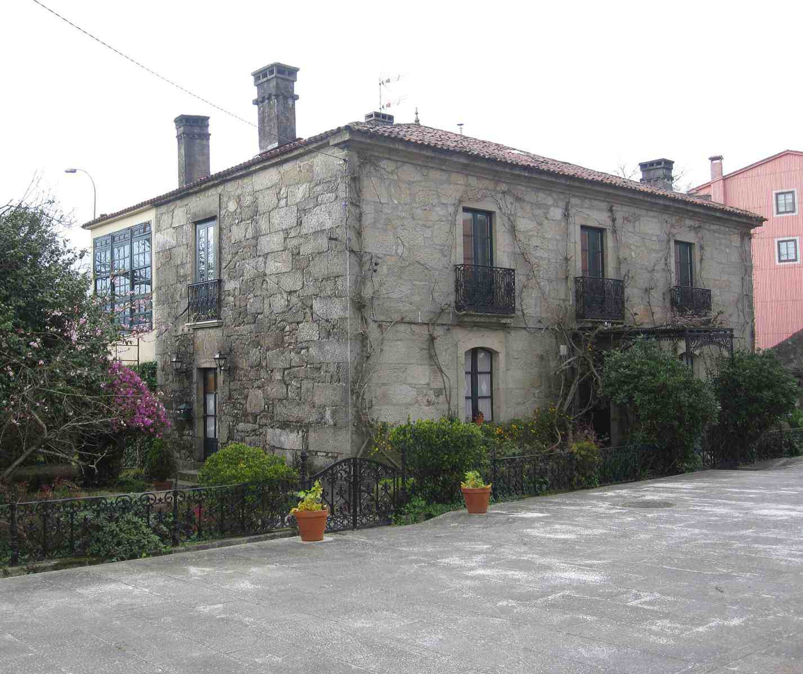
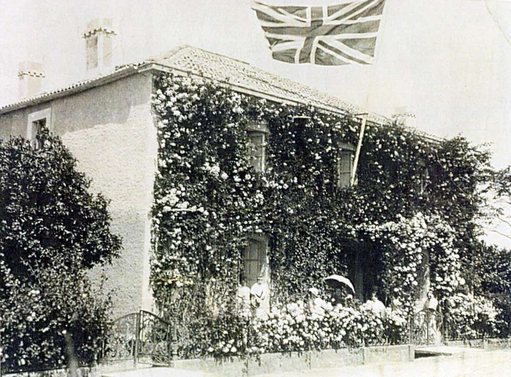
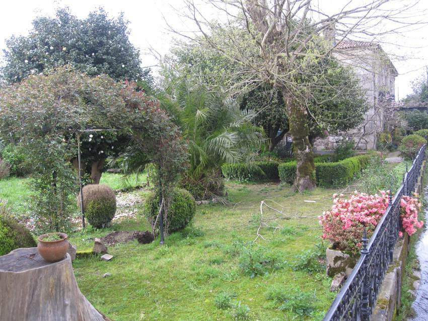
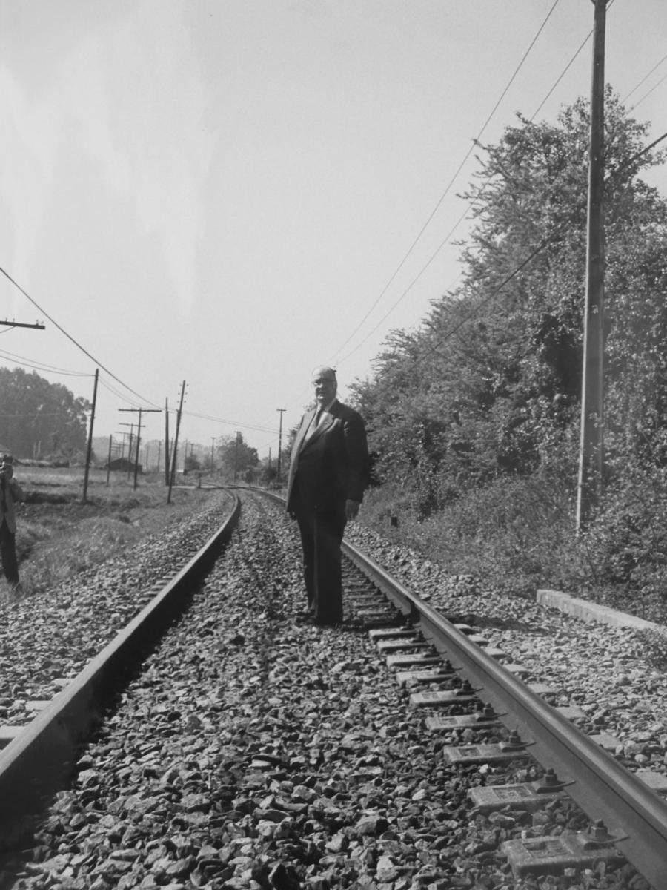
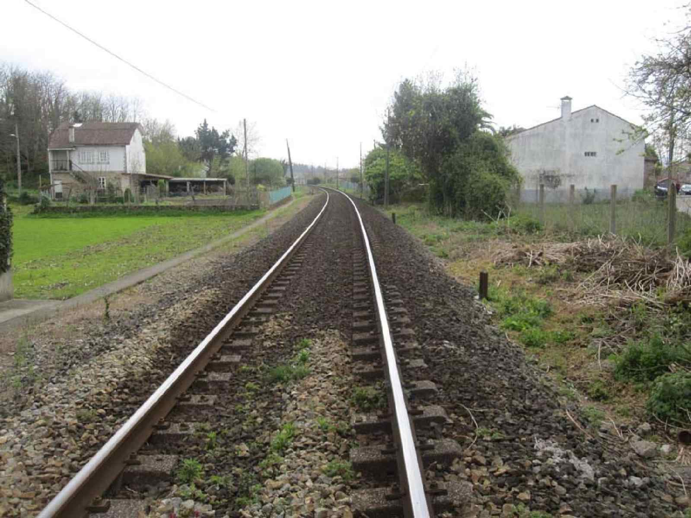
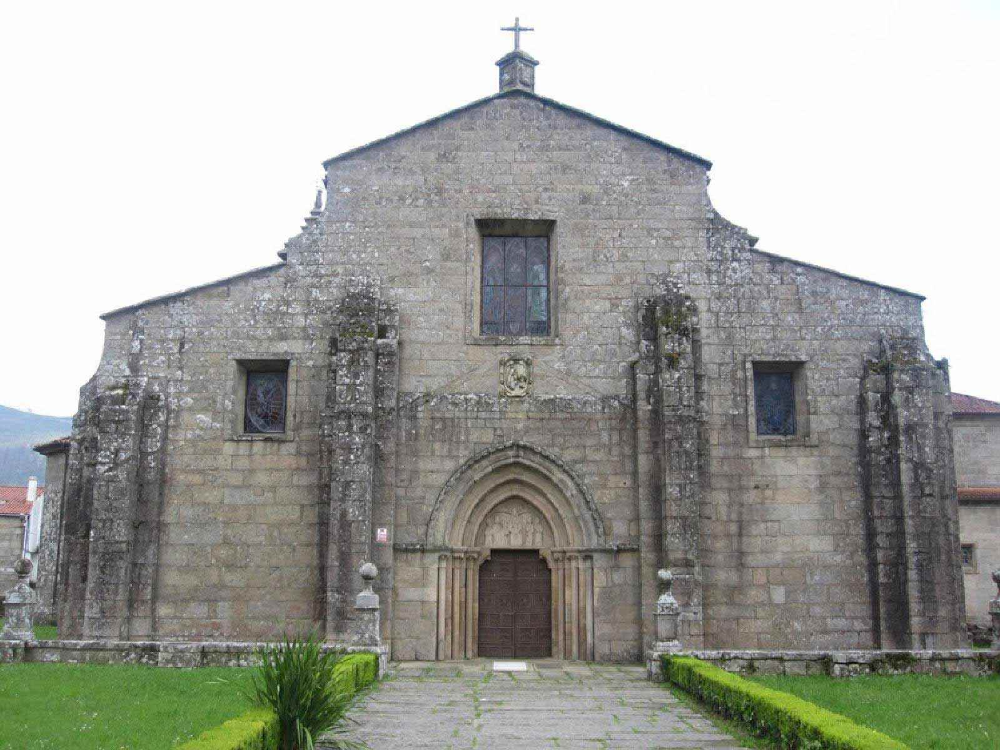
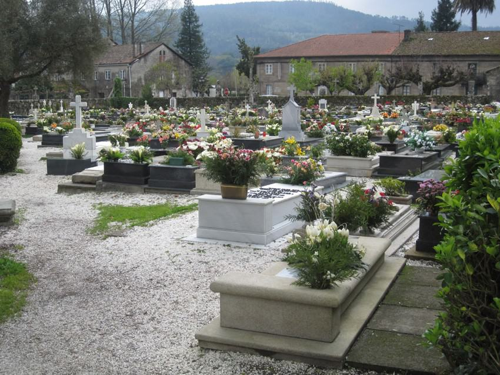
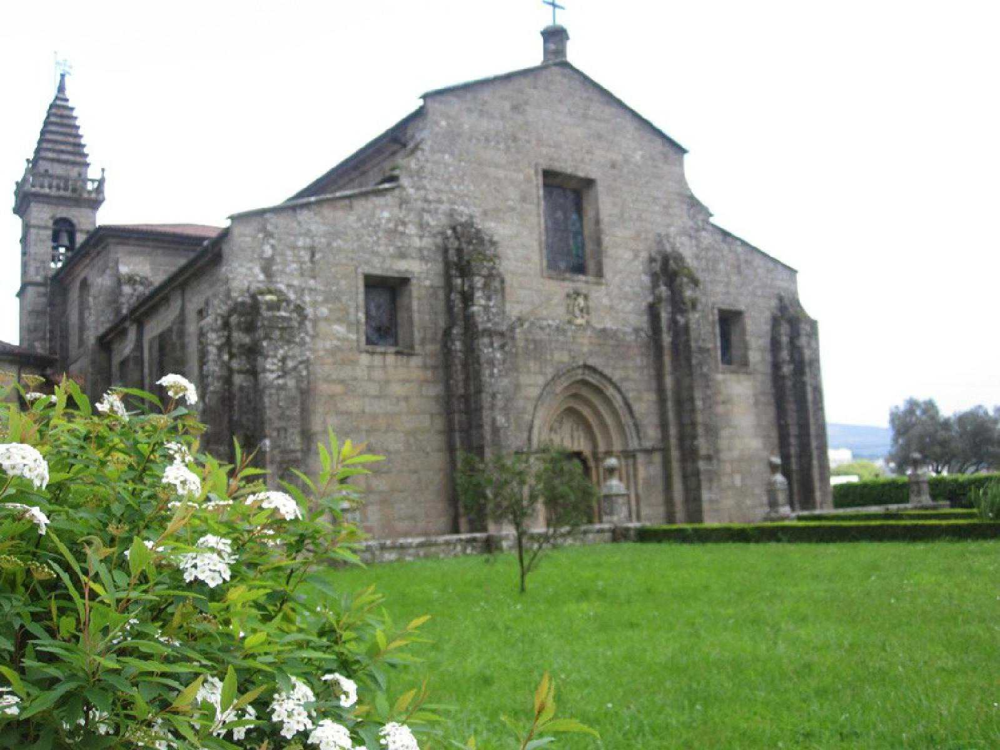

"En Iria aprendí fabulosas historias de la familia, marinos que habían dado la vuelta al mundo, abuelos que construían ferrocarriles en la India, tíos abuelos que desarmaban moros a patadas, príncipes húngaros que pretendían emparentar con nosotros… En Iria también aprendí a cazar grillos y a amaestrar pollos, que no es nada fácil y que hay que tener mucha paciencia…"
Camilo José Cela. La rosa
Fundación Pública Galega Camilo José Cela
“Aquí se encierra todo cuanto, desde hoy, dono a la cultura para su mejor beneficio y más adecuado y provechoso logro. Lo que aquí se ha de guardar lo entrego a la cultura, decía, ese latido que se expresa en todas las lenguas del mundo, presentes y aun pretéritas, vivas e incluso muertas, grandes y también pequeñas, de origen cierto y noble de cuna desconocida y borrada, pero también lo deposito –y ni por capricho ni por casualidad- en el confín del Occidente que me vio nacer para mi fortuna y mi orgullo. Vaya hacia esta verde y luminosa y entrañable latitud mi mejor y más rendido reconocimiento.”
Discurso de inauguración de la Fundación Camilo José Cela
Iria Flavia, 11/6/1991
Casa natal Camilo José Cela
“En la vía, en el paso a nivel de Iria Flavia, construyó mi bisabuelo su casa, como buen ferroviario, y en esta casa nacimos mi abuela Nina y yo. La casa de Iria es una casa cuadrada, de dos plantas con dos galerías, una al norte y otra al sur, y con la fachada principal –que ahora, con la desviación de la carretera, queda a la parte de atrás- cubierta por completa de guisantes de olor, de rosas francesillas y de madreselva. Alrededor de la casa hay un jardín donde en tiempos – tiempos que yo recuerdo, ¡ay!, perfecta y dolorosamente- crecían las palmeras airosas, y el inmenso y extraño naranjo, y el aromático limonero y, a su lado, el pino real y el árbol del holle, el árbol de las navidades inglesas y de los más clásicos christmas-cards, con sus pinchantes hojas de un verde brillador y sus minúsculos frutos de un rojo reluciente.”
“A las nueve y veinte de la noche del día 11 de mayo de 1916, jueves, vine a este valle de lágrimas en la casa del paso a nivel de Iria Flavia, ayuntamiento de Padrón, diócesis de Santiago de Compostela, provincia de La Coruña, banda de estribor de la ría de Arosa, allá donde se encuentran los ríos Sar y Ulla; fui el primer hijo de los varios que tuvieron mis padres”
“Yo nací nieto de ferroviarios, como ya dije, y con la cama de mi madre retemblando por el paso del tren. “En Iria, en casa de mi abuela, paso la tos ferina. Es el tiempo de las vacas gordas en la familia y tanto la abuela como mis tías pintaron de oro y azul aquellas semanas, felices a pesar de los golpes de tos que me dejaban rendido y medio muerto. Años más tarde –pocos años más tarde- y subido a un manzano, como oí decir que hacía Rosalía, escribo mis primeros versos: Oda al mar y Madre, madre. Los originales los guardó mi madre hasta la guerra civil, en que se perdieron. Al pie del manzano hay un criado, por si me caigo.”
”Merendábamos en un pradito que había detrás de la casa y que hoy se comió la desviación de la carretera.”
"Merendábamos en un pradito que había detrás de la casa y que hoy se comió la desviación de la carretera." Camilo José Cela. La rosa



Vía ferrocarril
“Era un ferrocarril familiar en el que las pescadoras y las lecheras pedían rebaja en la taquilla, con unos trenes amables y renqueantes tirados por viejas máquinas que parecían sacadas de las películas del Far West. Las locomotoras –más humanas, mucho más humanas que las que vinieron después-, tenían sus nombres propios grabados, en una placa reluciente, sobre la panza: Princesa de Asturias, Príncipe de Gales, María Cristina, Ría de Arosa, Minero Primero, Vázquez Mella. Cada tren tenía su maquinista y su fogonero, siempre los mismos, y la gente, en vez de hablar de mixtos y de correos, llamaba a los trenes por el apellido de su conductor:«Xa ven Pereira», «Hoxe pasa a tempo Lourido», «Fernández Leva moito retraso», etc."
"Algunos escritores se metieron con el tren, porque paraba delante de la casa para que nos bajásemos alguno, o en un túnel para que el fogonero llenase el botijo de agua fresca. Allá ellos.” Camilo José Cela. La rosa.



Santa María de Adina
“En torno a la iglesia donde fui bautizado, está el cementerio de Adina, que cantó Rosalía de Castro. En él yacen hoy mis abuelos y mis dos hermanos muertos; cuando nací, aquella tierra no guardaba más que huesos de bisabuelos, huesos sobre los que no toca llorar.” Camilo José Cela. La rosa. “Sobre el cementero de Adina, que cantó Rosalía en verso estremecido y cadencioso, vuela la paloma. Entre la madreselva florecida y la hermética y ofendida camelia, crece el olivo funerario, el olivo que se salió de su geografía, el olivo que no da olivas, de tan aristocrático como se siente, pero que presta sombra y regala recuerdos y esperanzas.” Camilo José cela. Del Miño al Bidasoa" “Santa María la Mayor de Iria Flavia, enlosada de epitafios, espantada en sus hieráticos santos románticos y rodeada de un cementerio –el tierno cementerio de Adina, de Rosalía- donde los muertos se cubren con dulce tierra, la madreselva olorosa y enamorada se cuelga por los muros y el olivo es el árbol funerario, alza su arquitectura al borde mismo del camino real”
“Me bautizaron cuando me recuperé un poco, en la Colegiata de Santa María la Mayor de Adina, donde en tiempos idos fue obispo San Pedro de Mezonzo, el inventor de la Salve” Camilo José Cela. “Iria Flavia”



Tumba de Camilo José Cela
“Ahí enfrente, en el cementerio de Adina que cantó Rosalía de Castro y del que la irresponsabilidad histórica se llevó por delante sus cenizas, quedarán mis huesos cuando les llegue su preciso tiempo; ahora que todavía soy dueño de ellos, ruego y solemnemente proclamo poniendo a Dios por testigo, que no sean tocados ni trasladados jamás a lugar diferente alguno. Y por aquí y por ahí y volando sobre esta feraz y mansa y civil vega de Iria Flavia, entre mis dos ríos, el verde y hondo Ulla y el rumoroso y a las veces enloquecido Sar, quedará flotando mi alma de gallego errante que, antes de que fuere ya tarde, probó a meter un poco de orden en el recuerdo y en la voluntad, en los papeles y hasta en la muerte”
“Ahí enfrente, en el cementerio de Adina que cantó Rosalía de Castro y del que la irresponsabilidad histórica se llevó por delante sus cenizas, quedarán mis huesos... ” Camilo José Cela (Iria Flavia, 11/6/1991).